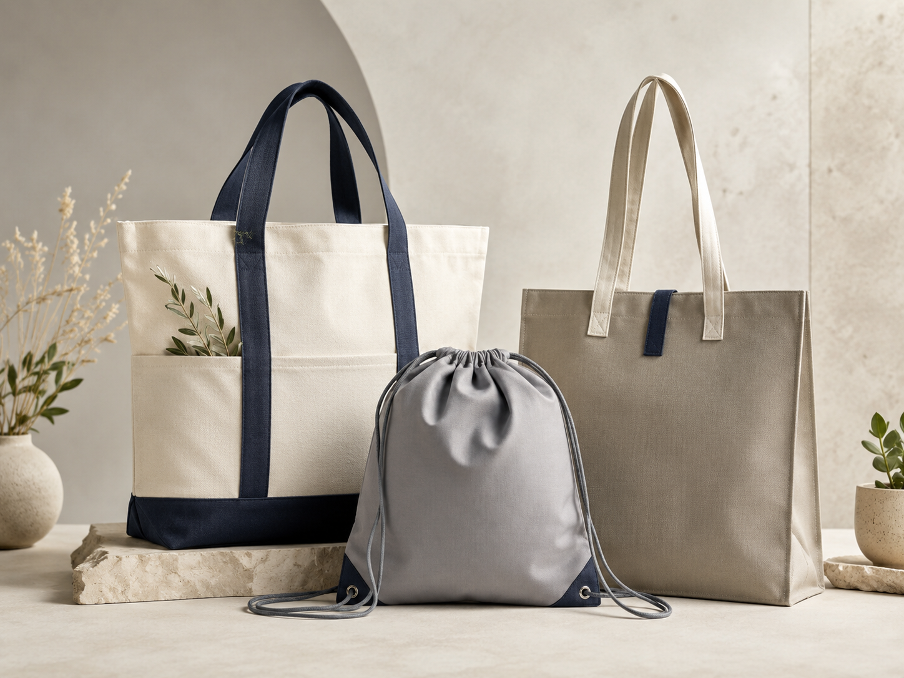

Lunch bags, picnic coolers, bottle bags and delivery bags need different structures.
Cooler Guide
How To Customize Cooler Bags For Your Brand
Cooler bags need more than a printed logo. A good custom project should balance insulation, capacity, carrying comfort, material, branding and packaging.

Foam thickness, lining and inner construction affect cooling performance.
Size, opening style and internal space should match the actual use.
Logo and packaging should fit retail, promotional or corporate buyer needs.
01
Define The Use Scenario
The first step is to decide how the cooler bag will be used. A compact lunch bag and a large delivery cooler should not share the same design logic.
- Lunch bags should be easy to carry and clean.
- Picnic coolers usually need larger capacity and stronger handles.
- Bottle coolers need specific diameter and height planning.
- Delivery bags may need stronger structure and better insulation.
02
Choose Outer Fabric And Lining
The outer material controls appearance and durability. The lining controls cleaning, food-contact usability and insulation performance.
- Oxford and polyester are common outer materials for practical cooler bags.
- PEVA and aluminum-foil style linings are common inner options.
- Foam layer thickness should match the expected insulation requirement.
- RPET fabrics can be considered for eco-minded buyer programs.
03
Confirm Structure And Carrying Details
A cooler bag's usability depends on shape, opening, handle, strap and internal space. These details should be confirmed before making samples.
- Confirm capacity by food container, lunch box, bottle or can quantity.
- Decide tote, box, shoulder strap, handle or backpack structure.
- Check whether the bag should stand upright, fold flat or hold shape.
- Review zipper direction, pocket position and handle reinforcement.
04
Plan Logo And Packaging
Cooler bags are often used for retail, promotional events or corporate gifts. Branding and packing should be planned together with structure.
- Choose printing, woven label, rubber patch or embroidery based on outer fabric.
- Confirm hang tag, polybag, barcode label or carton packing needs.
- Share reference photos if you want a similar size or structure.
- Confirm logo placement before sample production.
Cooler Bag Planning
Function Comes First, Branding Finishes The Product
A cooler bag should feel practical in real use while still presenting the buyer's brand clearly and professionally.
- Outer fabric and lining
- Insulation layer
- Capacity and structure
- Logo and retail packing

Buyer Checklist
Before Customizing Cooler Bags
The best cooler bag projects are clear about usage, size, insulation and branding before sampling begins.
Lunch, picnic, bottle and delivery bags need different design priorities.
Capacity, lining, foam, handle and zipper all affect the final product.
Logo and packaging should match the buyer's market and channel.
Need Project Support?
Need Help Planning A Cooler Bag Project?
Send the target use, size, capacity, material direction and logo method. We can help define the cooler bag structure.